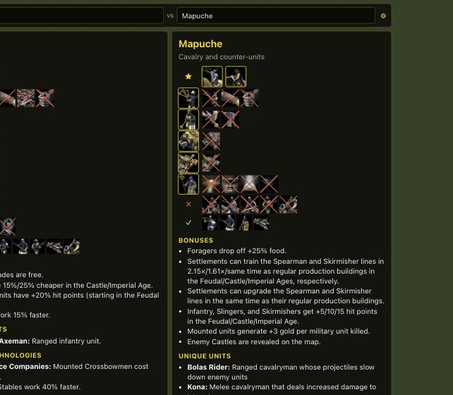

Install: the warning is expected
Instalar: la advertencia es normal
The installers aren't code-signed, so the first time you open it Windows or macOS warns you that they don't know who made it. It's a one-time step. Signing would cost about USD 320–540 every year for a free project: a Windows code signing certificate is USD 220–440 a year (and comes on a hardware token), and Apple's developer program is USD 99 a year. Everything is built in public from the source code; see Is it safe? below.
Los instaladores no están firmados, así que la primera vez Windows o macOS te avisan que no conocen al autor. Es un paso que se hace una sola vez. Firmarlos costaría unos USD 320–540 por año para un proyecto gratuito: un certificado de firma de código para Windows sale USD 220–440 al año (y viene en un token físico), y el programa de desarrolladores de Apple, USD 99 al año. Todo se compila en público desde el código fuente; mirá ¿Es seguro? más abajo.
Windows
- Open the downloaded
…_x64-setup.exe. - A blue window says "Windows protected your PC". Click More info.
- Click Run anyway. The installer runs without asking for admin rights.
- If your browser says the file "isn't commonly downloaded", choose Keep (in Edge: … → Keep → Keep anyway).
- Abrí el
…_x64-setup.exeque descargaste. - Aparece una ventana azul: "Windows protegió su PC". Hacé clic en Más información.
- Hacé clic en Ejecutar de todas formas. El instalador no pide permisos de administrador.
- Si el navegador dice que el archivo "no se descarga con frecuencia", elegí Conservar (en Edge: … → Conservar → Conservar de todos modos).
macOS
- Open the
.dmgand drag AoE2 Civs Overlay to Applications. - Open it from Applications. macOS says it can't be opened or that it can't check it: click Done (not "Move to Trash").
- Go to System Settings → Privacy & Security, scroll down and click Open Anyway next to "AoE2 Civs Overlay was blocked". Confirm with your password.
- macOS asks for permission for the keyboard shortcut the first time; allow it.
- Abrí la
.dmgy arrastrá AoE2 Civs Overlay a Aplicaciones. - Abrila desde Aplicaciones. macOS dice que no se puede abrir o que no la puede verificar: hacé clic en OK (no en "Trasladar a la papelera").
- Andá a Ajustes del Sistema → Privacidad y seguridad, bajá y hacé clic en Abrir igualmente junto a "Se bloqueó AoE2 Civs Overlay". Confirmá con tu contraseña.
- La primera vez macOS puede pedir permiso para el atajo de teclado; permitilo.
Linux (experimental)(experimental)
- Download the
.AppImage, make it executable (chmod +x, or Properties → "Allow executing as program") and run it. Or install the.deb. - Staying on top of a fullscreen Proton game depends on your desktop; under Wayland it may not. Run the game in borderless/windowed mode if it hides the overlay.
- Descargá el
.AppImage, hacelo ejecutable (chmod +x, o Propiedades → "Permitir ejecutar como programa") y abrilo. O instalá el.deb. - Que quede encima de un juego a pantalla completa con Proton depende de tu escritorio; con Wayland puede que no. Si el juego lo tapa, usá el modo ventana o ventana sin bordes.
Use
Uso
- Ctrl+Alt+` (macOS: ⌘+⌥+`) shows or hides it. Esc hides it too.
- Type a few letters of a civ and press Enter; then the rival's.
- Under each civ: its unique units (★), then each unit line with what it lacks crossed out.
- ⚙: language (19 options, with the game's official names), which sections and tech tree lines to show.
- On Windows, set the game to Full Desktop (Options → Graphics → Display Mode) so the overlay stays on top.
- Ctrl+Alt+` (macOS: ⌘+⌥+`) lo muestra u oculta. Esc también lo oculta.
- Escribí unas letras de una civ y apretá Enter; después la del rival.
- Debajo de cada civ: sus unidades únicas (★) y cada línea de unidades con lo que le falta tachado.
- ⚙: idioma (19 opciones, con los nombres oficiales del juego), qué secciones y qué líneas del árbol mostrar.
- En Windows, poné el juego en Pantalla completa de escritorio (Opciones → Gráficos → Modo de pantalla) para que el overlay quede encima.
Is it safe?
¿Es seguro?
- It can't get you banned. It doesn't read the game's memory, inject anything or touch its files. It's a separate window with information from the wikis and the game's own texts, built in.
- No data leaves your computer. The only connection it makes is to GitHub, to check for a new version of itself. No accounts, no tracking.
- Built in public. Every installer is built by GitHub Actions from the open source code, with a build attestation proving which commit it came from.
- Easy to remove. Windows: Settings → Apps → AoE2 Civs Overlay → Uninstall. macOS: move it to the Trash. Linux: delete the AppImage.
- No te pueden banear por usarlo. No lee la memoria del juego, no se inyecta en él ni toca sus archivos. Es una ventana aparte con información de las wikis y de los textos del propio juego, que vienen incluidos.
- Tus datos no salen de tu computadora. La única conexión que hace es a GitHub, para ver si hay una versión nueva de sí mismo. Sin cuentas, sin rastreo.
- Compilado en público. Cada instalador lo arma GitHub Actions desde el código abierto, con una certificación del build que prueba de qué commit salió.
- Fácil de desinstalar. Windows: Configuración → Aplicaciones → AoE2 Civs Overlay → Desinstalar. macOS: mandalo a la papelera. Linux: borrá el AppImage.